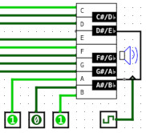

Octave
Octave
| Library: |
Audio |
| Introduced: |
5.0.3-HC |
| Appearance: |
 |
Behavior
Octave controls the playback of 12 notes, one full octave on a piano
keyboard. Notes are controlled independently, each with a dedicated pin for each
note to control whether the corresponding sound is playing or not. Note playback
is controlled by a common enable signal and clock trigger, so that audio is
synchronized.
Pins
- West edge (12 separate inputs, each having bit width 1)
- Note Inputs: When the clock triggers, and if the component enable is not 0,
the value found at each input is examined. A value of 1 will cause the
corresponding note to be played, as if hitting a piano key. A value of 0, or any
error value, will silence the corresponding note. Thus a constant 1 value for a
note input will cause the note to be triggered fresh on each clock tick, if the
component is enabled.
- South edge, left side (input, bit width 1)
- Enable: When this value is 0, all other inputs are ignored, but any
previously triggered notes may continue to sound, as if holding a key down on a
piano keyboard. When the enable value is disconnected, or any other value than
0, all notes are immediately silenced, and new values are taken from the Note
Inputs.
- South edge, right pin marked with triangle (input, bit width 1)
- Clock: At the instant that this is triggered as specified by the Trigger
attribute, if Enable is not 0, all sounds are silenced and new sounds
are triggered depending on the Note Inputs.
Attributes
- Trigger
- Configures how the clock input is interpreted. The value
rising edge
indicates that the register should update its value at the instant when the
clock rises from 0 to 1. The falling edge
value indicates that it should
update at the instant the clock falls from 1 to 0.
- Octave
- Determines which piano keyboard octave the notes represent. Octave 4
contains a piano keyboard's "middle C" note.
- Center on C
- Determines whether the simulated octave should begin on the C note or A note
for the specified octave. A value of "Yes" corresponds to an octave spanning
from C of the specified octave, to the next higher B. A value of "No"
corresponds to an octave from A to G#.
Poke Tool Behavior
None.
FPGA Synthesis
Not yet supported.
Up to Library Reference